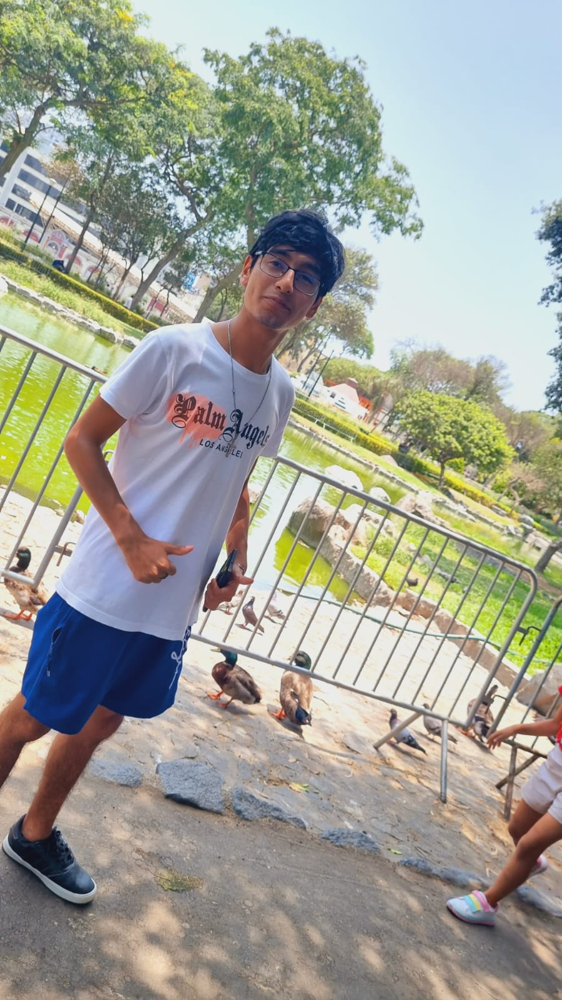

CONISLLA RÍOS RODRIGO ALEJANDO
Colaborador activo en el desarrollo frontend, trabajando mano a mano con los desarrolladores UI para implementar soluciones efectivas.
Trabajó en el diseño centrado en el usuario (UI)
SOTO CAPCHA ANGIELINA NELITH
Contribuyó al diseño centrado en el usuario (UI) y a la experiencia de interacción (IX).
Se enfocó en la usabilidad del sitio y en hacer que la navegación fuera intuitiva.
Trabajó en la paleta de colores, tipografía y elementos visuales.
VERA HERNANDÉZ BRUNO ENRIQUE
Enfocado en el diseño de la interfaz de usuario.
Trabajó en la creación de elementos visuales, la paleta de colores y el diseño general del sitio.
VICENTE INCA ALDO VICTOR
Desarrolló contenido atractivo y relevante para la audiencia del blog
Enfocado en la creación y ejecución de estrategias de contenido.

VIVAR FARFÁN MIGUEL ALONSO
Responsable de la implementación de la interfaz de usuario.
Trabajó en la estructura HTML, estilos CSS y comportamientos interactivos con JavaScript.
Se aseguró de que la experiencia de usuario fuera intuitiva y atractiva.